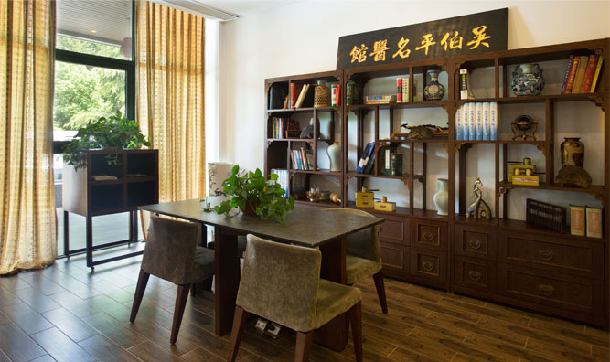
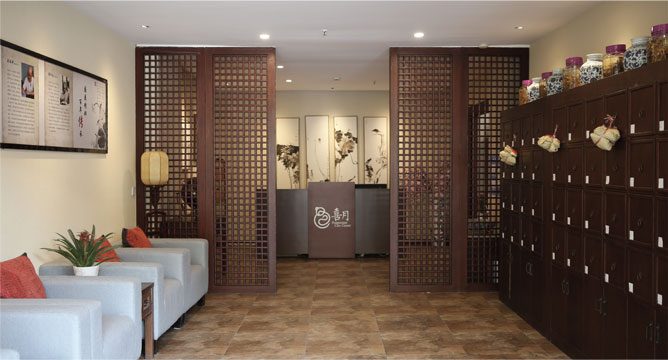
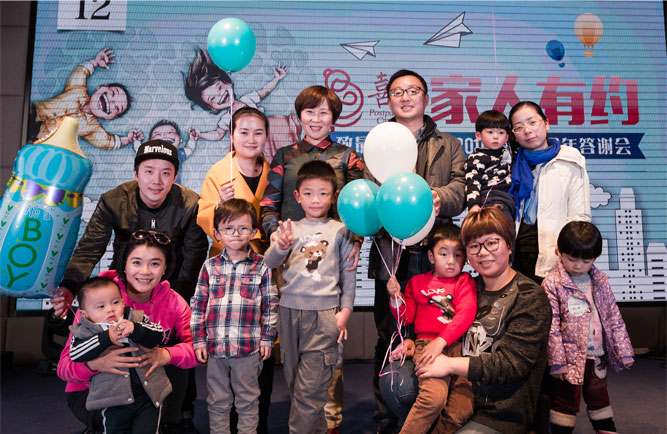

长按以识别二维码
袁梦：为女人制一身受益一生的保护衣。
袁梦：喜月养生月子会所创始人、喜月母婴服务有限公司董事长、喜月产后康复研究院院长、杭州市女企业家协会理事、国家中医药管理局中国民族医药学会中医妇科分会副会长。
八年前，设计师出身的袁梦办的服装公司正运营得风生水起，占地千亩的厂房订单不断，客户和朋友都特别喜欢她设计的衣服。但就在这时，她突然结束了生意红火的服装公司，转而办起了当时看来还非常冷门的月子中心。“一身好衣服穿不了一辈子，但是一个好月子却可以让女人受益终身。”袁梦介绍到当初开办中医特色的月子中心原因特别简单。
因为出身中医世家的先生，袁梦一直深受中医的影响，但学医的先生钟情于授业育人多年来也不做他想。2000年，袁梦的公公，享誉全球的国医大师吴伯平教授，从国外行医归来。 因为在女性杂症调治的学术权威，找吴教授问诊的人络绎不绝。然而，一面是看到那么多身着华服但忧心问诊的面孔，一面却听到各种质疑推倒甚至出现推崇“产后去月子化”的声音。袁梦当时内心的感触很大，觉得该是时候和家人一起做些事情，让更多身边人认识中医，了解这份属于中国人的古老智慧，感受中医能为家庭带来的身心喜悦。


于是，2009年10月，喜月母婴服务有限公司（喜月养生月子会所）在杭州正式成立。公司以提供中医产后养生康复技术为核心，整合中医养生调治、现代医学护理、月子饮食、月子客房管理、月子生活护理等为一体的个性化产后休养服务，是全国首家结合传统医学和现代护理科学的高端入住式母婴月子养生机构。
用心才能做出更好的服务，袁梦跟入住喜月的每位妈妈都非常熟悉，她们的小宝宝跟袁梦也会显得更加亲昵。一直以来，喜月坚持母婴同室的调养模式，方便妈妈随时照看宝宝，增进母婴情感提高母乳喂养的同时，对妈妈的修复和宝宝的成长都有益处。为此，喜月配备了专业的医护团队确保护理质量，喜月专职资深产科专家、责任护士团队和1对1母婴管护师组成的护理团队提供24小时现代医学服务，为妈妈和宝宝制定个性化护理方案，提供专业科学的康复休养服务。

一晃眼已经7年，现在，喜月已精心呵护超过3000位新妈妈，最大的喜月宝宝如今都已上学。喜月大家庭聚会时，看着一溜排的喜月宝宝从大到小排着，袁梦的心里总是说不出的暖心。因为她不再只是喜月企业的经营，喜月大家庭的生息，更是中医喜悦之情的生息传承。
新生代表着希望和未来，袁梦脸上流露出一份满足和喜悦。从对悉心服务的极致追求到“助己达人”的文化践行，喜月不仅是她的事业更是许多妈妈和孩子起飞的摇篮。风雨兼程甘之如饴，喜月愿继续把这份中医的喜悦之情带给更多的家庭。
你若安好，便是喜月。